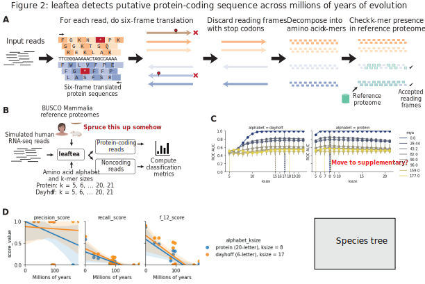
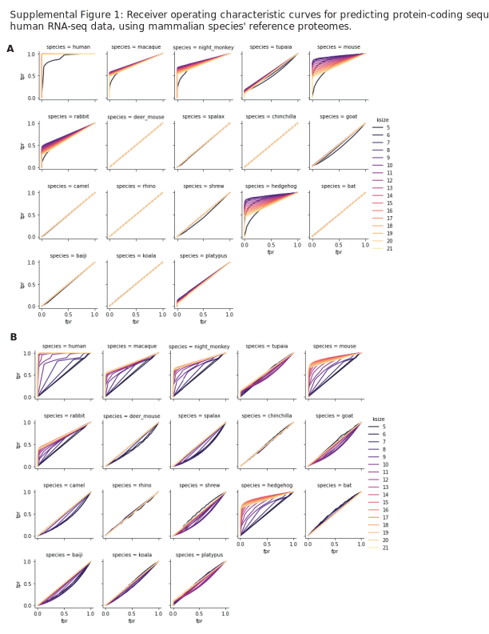
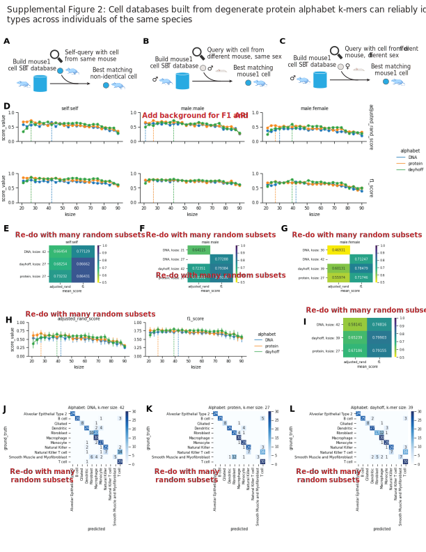
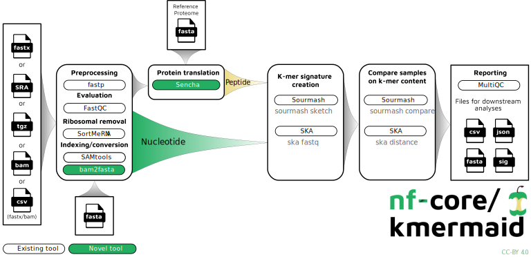
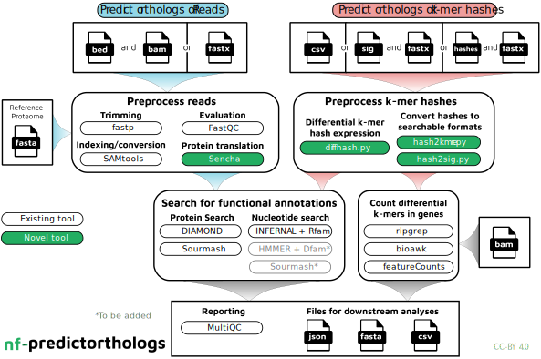

N. Tessa Pierce 0000-0002-2942-5331
· bluegenes
· saltyscientist
Department of Population Health and Reproduction, University of California, Davis
· Funded by NSF 1711984
Saba Nafees 0000-0002-3292-7703
· snafees
· sabanafeesTTU
Data Sciences Platform, Chan Zuckerberg Biohub; Department of Biological Sciences, Texas Tech University; Department of Mathematics & Statistics, Texas Tech University
C. Titus Brown 0000-0001-6001-2677
· ctb
· ctitusbrown
Department of Population Health and Reproduction, University of California, Davis
· Funded by Moore Foundation GBMF4551
Animals spread pathogens to humans in zoonotic diseases, and many of these animals are asymptomatic, and we want to leverage single-cell transcriptomics to identify cell types enabling these organisms to survive without symptoms, and apply them to human therapeutics. However, 99.9% of animal species on the Earth do not have a reference genome, including many pathogen host animals.
Thus, there is an unmet need for transcriptome-first methods to interrogate single cell types that do not require reference genomes or gene annotations.
To this end, we introduce the concept of “\(k\)-mer homology,” a method for lightweight detection of orthologous genes directly from transcriptomes without need for a reference genome. Underpinning \(k\)-mer homology is the tool leaftea, a novel computational method for extracting high-confidence protein-coding sequences from RNA-seq data into non-coding reads and protein-coding reads which can then be manipulated to reduced amino acid alphabets which are directly comparable across large evolutionary distances.
As the direct assignment of protein-coding sequence skips both traditional alignment and gene orthology assignment it can a) be applied to transcriptomes from organisms with no or poorly annotated genomes, and b) identify putative functions of protein sequences contributing to shared cell types.
We applied these methods to the problem of understanding the unique ability of bats to harbor zoonotic diseases, especially coronaviruses such as SARS, MERS, SARS-CoV-2, an issue of fundamental importance to human health.
However, important immunological genes such as interferon pathway genes have not been adequately identified in the bat genome and thus that aspect of bat biology could not be identified.
With our methods, we were able to detect widespread expression of — in immune tissues of the SARS reservoir species, and the purported SARS-CoV-2 species Rhinolophus sinicus (Chinese horseshoe bat) single-cell RNA-seq transcriptomes, as compared to human tissues.
The R. sinicus interferon genes were slightly different from human interferon genes […]
By enabling analyses across divergent species’ transcriptomes in a genome-, gene annotation-, and orthology-agnostic manner, leaftea illustrates the potential of non-model organisms in building the cell type evolutionary tree of life.
Introduction
Key sentence: To identify cell types of interest in host organisms, single-cell RNA-seq is a powerful tool, but it is not readily accessible to organisms without well-annotated reference genomes.
The current COVID-19 pandemic has exposed inabilities of understanding zoonotic diseases in wild animals such as bats, due to poorly annotated genomes.
However, the asymptomatic nature of infection in zoonotic host organisms and how it could be applied to humans is of immediate concern.
Zoonoses such as SARS-CoV-1 and SARS-CoV-2 are often harbored in wild animals such as bats, that do not have well annotated genomes, but the asymptomatic nature of infection in those organisms and how it could be applied to humans is of immediate concern, due to the recent SARS, MERS, and Ebola outbreaks, and the current COVID-19 pandemic.
Identifying cell types in these host organisms enables studying the broad array of cell types available to living creatures, and can help understand human disease by seeing cell types that are “normal” in one animal, but resemble human disease cell types.
To identify cell types of interest in host organisms, single-cell RNA-seq is a powerful tool, but it is not readily accessible to organisms without well-annotated reference genomes, as 99.999% of the approximate 10 million animal species predicted to exist on Earth have no submitted genome assembly [1,2].
Current methods for identifying cell types use single-cell RNA-sequencing, however, require three things: (1) high-quality genome assembly, (2) high-quality predicted gene annotations and (3) high-quality orthologous gene mappings across species.
But, we can nonetheless generate single-cell RNA-seq data from these species with poorly annotated genomes, and if we can leverage the annotations from existing organisms, we can better understand why host animals are able to tolerate infection by a pathogen that is deadly in humans.
key: The most common strategies for cross-species transcriptomics lose data due to unaligned sequences, unannotated genes, and unmatched genes across species.
There are many strategies for comparative transcriptomics for single cells [3].
The most commonly used strategies for cross-species gene expression analyses lose data due to unaligned sequences, unannotated genes, and unmatched genes across species.
Unaligned sequences are largely due to errors in genome assembly, or
While high-quality end-to-end genome assemblies are now within reach with the recently published teleomere-to-telomere human genome assembly [4], and high-quality assemblies, including gene annotations, will soon be a possibility thanks to thhe efforts of the Vertebrate Genome Project [5,6].
While the genome assembly provides substantial informationa bout the genomic structure of a species, it does not yet have the matching genes across species.
key: Matching genes across species is an open and unsolved problem.
One of the first fundamental step is creating a common gene expression matrix to compare the cell types.
Matching genes across species is perfolrmed via a process called orthologous gene mapping.
A group that is working on this is the Quest for Orthologs Consortium, which has established benchmarking [7,8,9,10] services.
Another option besides using 1:1 orthologs is using orthogroups [11], aligning genes/reads to a common genome if the species are closely related, such as for primates [12].
and even fewer have gene predictions and orthologous gene mappings to human, which remains an open problem [13,14].
The most commonly used strategy is subsetting the matrix down to 1:1 orthologous genes, which already have been computed by a database such as ENSEMBL [15,15].
Comparative transcriptomics traditionally relies on orthologous gene mapping, which requires a genome.
Another strategy for more distantly related species is to only use transcription factor genes that are part of “core regulatory complex” (CoRC), which again subsets the data to only certain genes.
Not just at alignment, but at aligning to annotated genes, at subsetting to 1:1 orthologs – these are all data lossy steps.
While the first two steps are dependent on the genome assembly and gene annotation quailty, the subsetting to 1:1 orthologs cannot be solved with improved assembly and gene annotation tools.
It can be solved with using other strategies for finding orthologous genes.
Another strategy is aligning reads to the native species’ genome, and using a tool such as LiftOver to remap coordinates into a well annotated genome such as human, and use those genes.
For all of these tools, the problem with them is that they lose data at every step.
These tools are not available to the 99.9% of vertebrates that do not have a reference genome, but transcriptome work, single-cell RNA-seq data is now so easy to obtain, that people already want to do analyses with their single cell data even if their organism doesn’ thave a great reference genome.
And that’s what we are enabling.
Once the genomes of the species are obtained, the work is not over.
For each pariwise species comparison, the orthologous genes must be found.
There are many tools for this, such as OrthoFinder [11], eggNOG [16,17], and highly curated databases such as ENSEMBL [citation].
The time to run these tools is a long time.
But that’s not really the point… what we really care about is using the RNA-seq data directly and not losing data due to mismatched orthology, unannotated genes, or unaligned seuqences.
key: A method of not losing data due to unaligned sequences or unannotated genes is using all the data in the form of subsampled \(k\)-mers.
\(k\)-mers from sequencing data for single cells have been used to show that they can identify single cell types as well as gene counts [18].
Recently, there has been literature to use subsampled \(k\)-mers to identify metagenomes within metagenomic data, but this uses subsampling of the data [19,20,21].
It turns out that \(k\)-mers are quite redundant and it is not necessary to use all of them for genome identification.
Specifically, it is possible to use a fractional subsampling of the original data to represent the data faithfully as if all \(k\)-mers were stored, as implemented in the Sourmash software [20,21].
\(k\)-mers or k-long substrings have a long history in bioinformatics [22] and have been widely used for genome and transcriptome assembly problems. They were recently applied to metagenomics for taxonomic classification.
We show that we use a subsampled set of the \(k\)-mers to still identify cell types across and within species.
However, for applying to cell types across species, we add the layer of using reduced amino acid alphabet \(k\)-mers.
However, for applying to cell types across species, we add the layer of using protein \(k\)-mers.
key: Protein sequence can be inferred from RNA-seq due to nullomers.
Nullomers are sequences that are not present in the genome annotation or protein sequences [23,24,25,26] of a species.
While this seems like there are a contradiction between wanting to use all the data, and then only using the data that is present in the database annotation, we show we are able to predict protein coding reads using simulated data.
The signal of a non-protein coding sequence is very obvious – the true coding frames have \(k\)-mers in common with the known database, and the non-true coding frames do not have \(k\)-mers in common.
There are only so many \(k\)-mers that are compatible with eukaryotic, or mammalian life.
There are amino acid combinations that are not seen in the natural world.
Whether nullomers are not present due to natural selection or due to CpG hypermutability [27] remains under debate, there are this phenomena is real and can be exploited to identify putative protein-coding sequences.
By using the “negative space” of unobserved protein sequences, we can identify reading frames of RNA to protein-coding sequences that are unlikely.
Non-productive Reading frames of RNA-seq can be found in the nullomers.
Protein sequences that have been observed are inferred in the \(k\)-mers.
key: Gene annotations can be inferred from RNA-sequencing data, which is easily obtained with commodity tools
What we can do with \(k\)-mers is use a peripherally related genome to align to, and then extract the protein-coding reads and \(k\)-mers that are present, then directly compare them.
Transcribed seqeunces in the form of RNA-seq data can be inferred to be transcribed genes for now.
key: Reduced amino acid alphabets provide a lightweight method of identifying matching genes across species.
Not only do we use protein \(k\)-mers, but we use reduced amino acid alphabet \(k\)-mers.
Amino acids can be categorized into their biochemical properites.
Many times,a protein can retain its same phsyical structure and function even with amino acid changes.
These amino acid changes may be retaining the phyiochemical properites of the amino acid.
The space of amino acid substituion was explored back in the 90s to find similarity searches for proteins.
The BLOSUM62, PAM substituion matrices were a method of assigning higher penalties for amino acids that changed their biochemical type.
Reduced amino acid alphabets are a method of reducing blame in changing of amino acid sequences, which is especially compatible with \(k\)-mers as if a single letter in a \(k\)-mer changes, then the whole \(k\)-mer no longer matches.
A method of quickly identifying potential orthologs is using reduced amino acid alphabets [28].
Reduced amino acid alphabets have been used for database searches of related protein sequences [29] and for protein structure prediction
[29,30,30,31,32,33]
We combine the two concepts of \(k\)-mer subsampling and homology identification via reduced amino acid alphabets into what we term “\(k\)-mer homology.”
key: There is an unmet need to quantitatively compare single-cell transcriptomes across species, without the need for orthologous gene mapping, gene annotations, or a genome assembly.
We translate our protein sequences to protein.
We need to predict protein seuqnece, and turns out most reading frames of RNA don’t need to be predicted – they are already near zero.
They have stop codons.
Thus, there is an unmet need to quantitatively compare single-cell transcriptomes across species, without the need for orthologous gene mapping, gene annotations, or a reference genome.
Short, \(k\)-long sequence substrings, or \(k\)-mers, have been proposed for clustering single cells [18] and here we implemented \(k\)-mers from putatitvely translated RNA-seq reads with reduced amino acid alphabets [29,30,30,31,32,33], to find shared cell types across species, and further identify de novo orthologous genes by querying the predicted protein sequences to a reference database.
This method relies solely on divergence time between species, which we show can be estimated from RNA-seq nucleotide \(k\)-mers (Supplemental Figure [???]).
As the direct assignment of protein-coding sequence skips both traditional alignment and gene orthology assignment it can a) be applied to transcriptomes from organisms with no or poorly annotated genomes, and b) identify putative functions of protein sequences contributing to shared cell types.
We benchmark the prediction of protein-coding sequence using simulated human RNA-seq data from single-copy genes present across all clades of mammals [34].
We show that one can extract putative protein-coding reads from — mammalian species in BUSCO, and present the best parameters for different divergence times.
We first demonstrate the utility of this method by comparing lung tissue transcriptomes from organisms diverged by approximately 100 million years ago (MYA) [35]: mouse from Tabula Muris Senis[36],
Across this evolutionary distance, only — 1:1 orthologous genes exist as found by …
We then add single-cell lung data from Rhinolophus sinicus, Chinese greater horseshoe bat, whose single-cell transcriptome was recently published [37]..
Using the \(k\)-mer homology method, we are able to distinguish the subtypes of T cells in the R. sinicus which were hidden using read counts alone, due to \(k\)-mers from genes not present in the genome assembly.
We then show the ability to find cell type enriched sequences that are absent from the reference genome, in particular interferon pathway genes and natural killer receptor genes.
key: \(k\)-mer homology is a transcriptome-first method for cross-species analyses implementing via \(k\)-mers and reduced amino acid alphabets
Thus, we have shown the reference-free method using the \(k\)-mers from single cells is a novel, annotation-agnostic method for comparing cells across species that is capable of identifying cell states unique to a particular organism, helping to build the cell type evolutionary tree of life.
Similar to \(k\)-mer based approaches for transcript quantification [38,39,40], we implemented \(k\)-mer based gene expression analyses across species, but instead of using DNA \(k\)-mers, our critical innovation was using translated protein \(k\)-mers.
We utilized sequence bloom trees (SBTs) [41] using a bottom-up approach to build them similar to previous work [42,43] to ensure localization of new datasets, meaning, if two leaves share a parent, they are guaranteed to be more similar than two leaves that do not share a parent.
For widespread accessibility and usage, we implemented leaftea into two distinct Nextflow pipelines following software best practices such as testing and continuous integration: (1) nf-core/kmermaid to compare translated transcriptomes across divergent species, and (2) czbiohub/nf-predictorthologs to infer functions of translated sequences.
Figure 1:A. Overview of single-cell RNA-seq lung tissue datasets from three species: Homo sapiens (human), Rhinolophus sinicus (Chinese horseshoe bat), and Mus musculus.
B. Overview of \(k\)-mer homology method. First, RNA-seq reads are translated to protein via the leaftea tool, then a cell type database is built from \(k\)-mers from the putative protein-coding sequence, given a query cell of a new species, the best matching cell from the model organism database is found, and the cell label is returned.
Results
Reliable identification of putative protein-coding sequence with leatea translate across ~150 million years of evolution
Table 1: Dayhoff encoding of amino acids by categories of biochemical properties, into a six-letter alphabet. Adapted from [44]. For example, the protein sequence LIVING would become eeeecb.
Amino acid
Property
Dayhoff
C
Sulfur polymerization
a
A, G, P, S, T
Small
b
D, E, N, Q
Acid and amide
c
H, K, R
Basic
d
I, L, M, V
Hydrophobic
e
F, W, Y
Aromatic
f
Figure 2: Application of \(k\)-mer homology to mammalian lung cell type identification recapitulates known biology and identifies enriched genes not present in reference genome assembly.
A. Overview of leaftea translate method. First, each read is translated into all six possible protein-coding translation frames. Next, reading frames with stop codons are eliminated. Each protein-coding frame is \(k\)-merized, then the fraction of \(k\)-mers which appear in the known protein-coding database is computed. Reading frames containing 5% or more \(k\)-mers matching the reference proteome are inferred to be putatively protein-coding.
B. Experimental set up to identify best \(k\)-mer sizes for translating protein-coding sequence, given a reference proteome of divergent organism. First, human RNA-seq reads were simulated from genes present in all extant mammals. Next, we used highly curated reference proteomes from BUSCO Mammalia, representing almost 200 million years of evolution, across a wide range of mammalian species. Using leaftea, we partition the reads into protein-coding and noncoding using a variety of amino acid alphabets and \(k\)-mer sizes, and then compute classification metrics.
C. Predictive power of detecting protein-coding sequence across ~200 million years of evolution, using simulated human RNA-seq reads and mammalian reference proteomes. x-axis, \(k\)-mer size used to translate the RNA sequence; y-axis, receiver operating characteristic area under the curve (ROC AUC) of protein-coding prediction at that \(k\)-mer size. Dotted vertical lines indicate \(k\)-mer size producing maximum ROC AUC for each divergence time.
D. Classification metrics of protein-coding prediction with both protein and Dayhoff alphabets, using best-performing \(k\)-mer sizes for each alphabet from (C). Left, precision; middle, recall; right, \(F_{1/2}\) score. x-axis, Estimated divergence time of reference proteome relative to human, from timetree.org; y-axis, value of classification metric.
To extract putative protein coding sequences from RNA-seq reads, we first established whether we could predict protein-coding sequences from simulated human RNA-seq data.
We reliably identified putative protein-coding reads using our tool, leaftea.
leaftea works by performing six frame translation of RNAs, discarding reading frames with stop codons, and decomposing each frame into amino acid \(k\)-mers, and checking for the \(k\)-mer present in the reference proteome (Fig. 1A).
In detecting putative protein coding sequence, there many be small amino acid changes that do not change the overall function of the protein, and to accommodate this, we offer the option to translate using either the original 20-letter amino acid alphabet, or a six-letter reduced amino acid alphabet, the Dayhoff encoding [1].
As many organisms of interest are not annotated, but a different organism with a related ancestor is, we wanted to understand the limits of protein-coding detection when the best-annotated organism in the database is divergent with up to approximately 200 million years.
To test this, we simulated human RNA-seq data from genes present in all extant mammals as determined by BUSCO [45], and used reference proteomes from eighteen mammals, ranging in divergence from 0 to almost 200 MYA [46] (Fig. 1B).
We found that we were able maximize classification power, measured via receiver operating characteristic area under the curve (ROC AUC), for most divergence times for a protein alphabet with a \(k\)-mer size of 8, and a \(k\)-mer size of 17 for a Dayhoff encoding (Fig. 1C, left and middle).
Across all mammals tested, it was clear that some were better annotated than others based on the ROC AUC curves (Supplemental Fig. ??).
For example, hedgehog (Erinaceus europaeus) had more successful protein-prediction than species with similar divergence times from human such as rhino (Ceratotherium simum simum), even though both are members of Boroeutheria, a mangnorder of mammals with a most recent common ancestor at an estimated 96 MYA of one another [46], containing the superorders Euarchontoglires (includes rodents and primates) and Laurasiatheria (includes bat, hedgehog, hooved animals, cats, and dogs).
We found that a protein alphabet with a \(k\)-mer size of 8 was most productive in translating the sequences for closely related species, within Boroeutheria, with a mean ROC AUC of 0.873898 among well-annotated reference proteomes.
For more distantly related species such as platypus (Ornithorhynchus anatinus), a the Dayhoff alphabet had a ROC AUC of 0.547203.
Interested in understanding whether leaftea’s strength lies in detecting true protein-coding reads, or eliminating non-coding reads, we computed the precision and recall of protein-coding classification (Fig. ??, left and middle).
Our precision to remove non-coding reads is quite high, especially with the Dayhoff alphabet, which retains a high precision even for the platypus proteome, which is approximately 177 MYA diverged from human.
As this metric performs better in precision, we used an \(F_{\beta}\) score, where \(\beta = 1/2\), to indicate a 2x preference for precision over recall (Fig. 1D, right).
This shows that while it is possible to detect putative protein-coding sequence, reliably rejecting non-coding sequences, even when the best annotated organism in the database almost 200 million years diverged from the query organism.
Degenerate amino acid alphabet \(k\)-mers identify common cell types across species and finds genes absent from even well-annotated genomes
Figure 3:A. Experimental set up to validate effectiveness of building a cell type database from one species, to label cells from another species. First, we build a cell type database using sequence bloom trees (SBTs) from mouse cells, then search using a human cell for the best matching mouse cell.
B. Mean of classification metrics across mouse:human cell type lookup experiments, highlighting the \(k\)-mer size that maximizes the mean for each metric and alphabet. Vertical lines, standard deviation of the mean. x-axis, \(k\)-mer size in DNA space, i.e. a \(k\)-mer size of 21 corresponds to a an amino acid length of 7. y-axis, value of classification metric. Left, adjusted rand score; right, F1 score.
C. Molecules and \(k\)-mer sizes maximizing classification metrics from (E).
D. Confusion matrices of classification using Dayhoff encoding and \(k\)-mer size of —, the best performing metrics from (E). x-axis, predicted cell label; y-axis, ground truth cell label.
key: Dayhoff-encoded \(k\)-mers reliably predict cell types within species
To test identification of cell types using \(k\)-mers, we first tested the method within species, with three main questions: Do the parameters change when the cell type lookup is within the same individual, across individual of the same sex, and across individuals of different sex?
To test this, we built cell type databases from \(k\)-mer signatures using sequence bloom trees (SBTs) [41] using the sourmash software tool [20,21].
Using the Tabula Muris Senis data, we built a cell type database from one mouse, and queried its own cells (Supplementary Fig. ??A).
We first manually unified cell ontology class names into broader groups to encompass larger cell type labels.
We then created \(k\)-mer signatures at many \(k\)-mer sizes, from 21 to 90, using the raw nucleotide sequence from the RNA-seq reads, the leaftea-translated protein sequence, or a Dayhoff-encoded version of the leaftea translated sequences.
To reduce batch effects, we removed \(k\)-mers from technical artifact genes, such as ribosomal and mitochondrial genes, and genes associated with single-cell dissociation [47,48,49,50,51].
Similar to previous work [18], we find that using DNA from coding nucleotides successfully distinguishes cell types within individuals of the same species.
However, we see that even within an individual using the leaftea-translated protein sequences re-encoded into the Dayhoff alphabet outperforms using the DNA alphabet (Supplementary Fig. ??D,E), suggesting that there are enough differences in amplification or sequencing errors to warrant a degenerate protein alphabet, even within individuals of the same species.
Interested in how the genomic differences across individuals affect DNA-based cell type classification, we built a cell type database from one male mouse, and queried a cell and returned its most similar matching cell (Supplementary Fig. ??B), and again the protein and Dayhoff alphabets outperformed the DNA alphabets (Supplementary Fig. ??D-F).
Finally, we also tested a male-female comparison (Supplementary Fig. ??C), where the cell database was built from male cells, and the query was female cells, and found again that the Dayhoff alphabet outperformed all other alphabets (Supplementary Fig. ??D,G).
To compare across the three experiments, we averaged the adjusted rand and F1 scores (Supplementary Fig. ??H) and found that a Dayhoff encoding with a \(k\)-mer size of 39, corresponding to a peptide length of 13, maximized the F1 scores to 0.799 (Supplementary Fig. ??I).
Curious which cell types were most commonly mis-categorized, we created confusion matrices (Supplementary Fig. ??J-L) and found that the most often misclassified cell type was Natural Killer T cells, which were classified to T cells by our method.
Within cell compartments of epithelial, endothelial, myeloid and lymphoid, we had the fewest misclassifications with a — alphabet and k-mer size of —.
As these cell types are often difficult to distinguish, we felt this was sufficient to show the utility of Dayhoff-encoded amino acid \(k\)-mers to identify cell types within a species.
Thus, we find that Dayhoff-encoded leaftea-translated \(k\)-mers with a DNA \(k\)-mer size of 39 works well to “soften the rough edges” introduced by individual genomic variation for cell types and can be used to identify similar cell types within and across individuals of the same species.
key: Human cell types can be predicted from mouse cells using \(k\)-mers from reduced amino acid alphabets
To recapitulate known biology in the mammalian lung, we compared lung cell atlases from species related within the mammalian suborder Euarchontoglires, whose most recent common ancestor is between 85 to 95 million years ago, we applied these methods to a mouse single-cell RNA-seq atlas, Tabula Muris Senis[36], to a human
lung cell atlas [52].
Next, we show that we can identify cell types in human RNA-seq data from mouse cell type databases.
We built a cell type database from the 18-month old mouse Lung tissue in Tabula Muris Senis, and queried with human lung cells (Fig. 2A).
We found that a Dayhoff encoding with a minimum \(k\)-mer size of 36 maximized the Adjusted Rand index (0.300) and the F1-scores (0.565) for classification of cell types across human and mouse (Fig. 2B-C).
Curious what the common misclassifications were, we plotted confusion matrices of the ground truth of human cells, compared to what they were predicted by the mouse cell type database (Fig. 2D).
To compare the performance of \(k\)-mer homology to traditional cross-species methods, we used — tools to compare label propagation across species using 1:1 orthologous gene datasets.
We found that using 1:1 orthologs was not good and resulted in a classification adjusted rand index score of — which was not good.
This enables finding expression of genes that may not be defined in the genome, and certainly genes that do not appear, are excluded by, subsetting to 1:1 orthologs, which is a common strategy for cross-species transcriptome comparisons.
key: Reduced amino acid alphabet \(k\)-mers enable identifying cell type enriched sequences that may not be present in gene annotation, genome assembly, or orthologous gene mappings
Once we identified common cell types across species, we then dug into genes that are enriched in the cell types that may not be present even in the annotated genome, or present in the orthologous gene mapping (Fig. 2E).
To find expression of genes that many not be in the genome, we took two approaches.
First, we used differential \(k\)-mer expression to enrich for particular sequences that were highly expressed in a cell type.
We found that the overlap between differential gene expression 1:1 orthologs, and the differential \(k\)-mer expression and orthogroup expression, we found — % overlap between al three, which had a — p-value of significance using a chi-squared or hypergeometric test of enrichment.
Additionally, we identified — genes that were enriched in molecular cell types that are not present in the genomes of human and mouse.
Specifically, we found an unannotated pulmonary surfactant-associated protein A gene in the Alveolar Type 2 cells, which makes sense since they express many surfactants.
We found that compared to gene expression, we had a —% overlap with the genes that are known to be enriched by gene expression of 1:1 orthologs, and we found — genes that were enriched in the cell types but were not 1:1 orthologs, and thus would have been missed by traditional methods.
Second, we used \(k\)-mers from orthogroups, orthologous groups of genes, defined at the mammalian clade, of genes with common function across species [cite orthogroups paper], computed signatures for the last 100aa of each amino acid sequence of orthogroups to get a relative gene expression (Fig. 2F) using containment search [53].
However, with the \(k\)-mers, we were able to find genes such as —, — and — which are enriched in the cell type —, but are not a 1:1 ortholog, and are instead a — ortholog.
Some of these were even not present in the genome assembly, for example — is present in the human genome assembly but not in the mouse assembly.
Thus, using \(k\)-mers, we are able to identify genes that are enriched in cell types but are not present in the genome assembly, in unannotated genes, or not 1:1 orthologs.
Reduced amino acid \(k\)-mers from transcriptomes enabled identification of unannotated immune genes in Chinese horseshoe bat suggesting immune adaptations
We refined the lung cell type annotation from the Chinese horseshoe bat using our \(k\)-mer based cell type label propagation method. Using these refined labels, we found that — in the bat cell types were more similar to — classical monocytes — in mouse and human than they tended to be to their original cell types (Fig. 3A).
This led us to then perform differential expression to find the genes that may be enriched in the bat cell types overall.
Using both logistic regression on the \(k\)-mer abundances, and expression of orthogroups containment in the cells, we found — genes were broadly expressed in the bat, as compared to mouse and human (Fig. 3B).
We then dug into the genes that are expressed, but not found in the aligned genome or the gene annotation, and found that — gene was a key contributor to — natural killer cell — type identity.
Mouse:bat
celltype mapping
mouse:bat:human
Identify gene expression for genes missing in genome
To identify molecular cell types unique to the Chinese horseshoe bat within mammals, we added a multi-organ, whole organism single-cell RNA-seq atlas of R. sinicus. We found expression of interferon genes, which have not been identified in the bat genome, but we were able to detect them in the transcriptome. In the bat scrnaseq paper, they performed qPCR to show expression of interferon genes, even though they weren’t identified in the genome, to show those genes do truly exist.
To apply the method to a novel biological problem and create insights into previously unknown biology, we applied the \(k\)-mer homology method to a recently published cell atlas of the Chinese horseshoe bat, R. sinicus[37].
Discussion
key: Single-cell atlases need to be made accessible to the 99% of non-model organisms
The availability of single-cell whole organism atlases [cite: tabula muris, tabula muris senis, MCA, HCA papers] enables rapid cell type identification in new datasets.
However, this cell type identification is not readily accessible to the 99.99% of animal species without a reference genome [cite vertebrate genome paper].
Indeed, 99.99% of the planet’s rapidly decreasing number of animal species [cite climate change, extinction papers] are unable to directly benefit from the cell typing efforts due to a combination of both lack of a reference genome, and understudied organisms that do not readily have gene mappings across species annotated.
Thus, there is an urgent need for methods that leverage model organism cell atlases for understudied animals.
It’s not just about the genome. The annotation and the orthology of gene annotations mapping across species is the really critical thing for cross-species analyses.
We developed a method to address the gap between model organisms cell atlases and the understudied organisms that may provide with novel cures for disease.
key: Putative protein-coding sequence can be detected across ~150 million years of evolution
First, we extracted putative protein-coding sequence from an understudied animal, the Chinese horseshoe bat, R. sinicus.
First, we demonstrated the ability to discard unlikely protein-coding frames from RNA-seq data using our tool, leaftea.
Our precision is high, meaning we are able to discard true non-coding frames very easily.
Even for species that are distantly related, ~150 million years between human and the distantly related platypus species, we were able to reject —% of the known non-coding frames from the simulated human data.
The most distantly related organism, platypus, with an estimated divergence time from human ranging from 167-192 MYA (46), was able to identify true protein-coding sequence in human —% of the time.
Thus, we are able to recover the putative protein coding sequences, even when the most recent ancestor of the closest related organism in the database is within ~150 million years, meaning this method can open up the possibilities for annotating cell types in single-cell RNA-seq atlases for any mammal.
key: Cell type databases built on protein \(k\)-mers can assign cell types across individuals within species
We showed that we can identify cell types across individuals, within species.
Interestingly, we found that even within species and within an individual, re-encoding the predicted protein sequenced found by leaftea into the Dayhoff degenerate amino acid alphabet with an amino acid \(k\)-mer length of 13 was most successful in detecting cell types.
Importantly, we also needed to remove genes associated with single-cell dissociation to enable cell:cell type labeling.
This suggests that due to differences in single-cell capture, molecular amplification, and sequencing errors, the nucleotide sequences are different enough that using nucleotide \(k\)-mers alone misses some cell types.
We showed that we can identify cell types across species using \(k\)-mers from a degenerate amino acid alphabet.
Across species, the Dayhoff alphabet was again the most successful in identifying cell types across species, specifically at an amino acid \(k\)-mer size of 12.
We then looked into the genes that were enriched in cells across species.
key: Cell type databases built on reduced amino acid alphabet protein \(k\)-mers can assign cell types across species
key: Lightweight orthology assignment using \(k\)-mers enabled reference-independent cross-species RNA-seq analyses and achieved insight into unannotated genes and genes absent from the genome assembly.
We implemented the concept of lightweight orthology assignment using \(k\)-mers to the problem of cross-species RNA-seq analyses and achieved insight into unannotated genes and genes absent from the genome assembly.
By removing the orthology inference step, kmermaid opens up the possibility of finding shared and divergent tissue and cell types across a broad range of species, paving the way for evolutionary analyses of cell types across species.
kmermaid can be used in de novo setting for non-model organisms, finding similar cell types within an organism, or finding similar cell types relative to a reference organism, without the need for a reference genome or transcriptome.
The memory usage of kmermaid is quite low, using only — MB for extracting coding sequences and 50MB for assigning protein \(k\)-mer signatures.
As the number of RNA-seq datasets, especially single-cell RNA-seq datasets continues to grow, we expect kmermaid to be widely used for identifying cell types in non-model organisms.
key: Reduced amino acid alphabet \(k\)-mer enrichment allowed for inserting /identifying genes that were not present in the genome assembly or gene annotation, or gene orthology
We were able to identify putative homologs across species by finding genes that were enriched in common cell types
key: We built an orthologous gene tree and were able to identify genes in cells across all species
Using orthogroups, we built a signature tree database of orthologous genes.
We then were able to quantify gene expression
We were able to detect genes that were not present in the genome, but were present in the orthologous genes databases.
We were thus able to directly compare cell types across species with a common set of orthologous genes.
We used sourmash gather to identify genes that were expressed across multiple cell types
In summary, we developed a method to identify cell types in a non-model organism using a reference atlas from another organism, without the need for a genome or gene annotation from the non-model organism.
In summary, we developed a method to identify both known cell types in a non-model organism using a reference atlas from another organism, without the need for a genome or gene annotation from the non-model organism.
This method can be used to combine single-cell cell atlases from well-annotated, model organisms, with sequencing data from poorly annotated non-model organisms, to directly find homologous cell types and orthologous genes.
By eliminating read alignment and orthologous gene mapping, kmermaid enables comparison of transcriptomes of the remaining 99.999% Eukaryotic species on Earth without submitted genome assemblies, with the cell atlases of a handful of model organisms to identify shared and novel cell types, and de novo identify orthologous genes.
By identifying homologous cell types across a broad variety of species, we come closer to an understanding of the evolution of genes, cells, and thus life itself.
kmermaid is free and open-source software and is available as Supplementary Data and at http://github.com/czbiohub/kmermaid and as a scalable Nextflow workflow at http://github.com/nf-core/nf-kmermaid.
We have provided pre-built cell type databases of Tabula Muris Senis at —.
Online Methods
Implementation
Reduced alphabets
At the core of sencha is the ability to cheaply compare sequences using \(k\)-mers.
As \(k\)-mers are very brittle to substitutions and thus to compare across species, one must allow for minor base substitutions that still maintain similar chemical or structural properties.
A reduced alphabet can encode useful information into a smaller alphabet space, and enable sequence comparisons across a broader variety of species than the original alphabet alone.
Reduced amino acid alphabets
Reduced amino acid alphabets have been useful for over 50 years [54] in finding related protein sequences [29,30,31,32,33].
Recently, a reduced amino acid alphabet (specifically, aa9 below) combined with \(k\)-mers were used to find homologous protein-coding sequences [28].
We build on this concept by enabling prediction of protein-coding sequences from RNA-seq reads, and by enabling users to perform a parameter sweep in an all-by-all comparison to identify putative homologs using a variety of alphabet metrics.
Dayhoff and HP alphabets
Table 2: Dayhoff and hydrophobic-polar encodings are a reduced amino acid
alphabet allowing for permissive cross-species sequence comparisons. For
example, the amino acid sequence SASHAFIERCE would be Dayhoff-encoded
to bbbdbfecdac, and HP-encoded to phpphhhpppp, as below.
Supplemental Figure 1: Receiver operating characteristic curves for predicting protein-coding sequence of human RNA-seq data, using mammalian species’ reference proteomes.
A. Prediction of protein-coding sequence using protein alphabet.
B. Prediction of protein-coding sequence using Dayhoff alphabet.
Set Jaccard threshold of translate by controlling false positive rate of protein-coding prediction
To set a threshold of the minimum Jaccard overlap between a translated read’s frame and the reference proteome, the most statistically principled way is to control the false positive rate of predicing a protein-coding read.
Probability of random \(k\)-mers from a read
If \(k\)-mers from reads were independent, identically distributed (i.i.d.) variables, then a translated read of length \(L_{\mathrm{translated}}\) drawing letters from the alphabet \(\Sigma\), whose size is \(|\Sigma|\), would contain
\[\left( \frac{1}{\left| \Sigma \right|^k} \right)^{L_{\mathrm{translated}} - k + 1}\](1)
However, \(k\)-mers drawn from reads are not i.i.d.
Let’s take a simple example.
If we have a two-letter alphabet, \(\Sigma = \\{a, b\\},\), thus \(|\Sigma| = 2\).
Let us use an example sequence \(S = abbabba\).
If \(k = 4\), then the first \(k\)-mer is \(abba\).
The second \(k\)-mer is thus either \(bbaa\) or \(bbab\), with equal probability.
We can generalize this: Given the first \(k\)-mer, the first \(k-1\) letters from the second \(k\)-mer are known, and thus the probability of guessing the next \(k\)-mer is \(\frac{1}{\left|\Sigma\right|}\).
Probability of future \(k\)-mers is influenced by the existence of previous \(k\)-mers.
Thus, the probability of a random \(k\)-mer from a sequencing read is completely dependent on the alphabet size \(|\Sigma|\) and its translated sequence length, \(L_{\mathrm{translated}}\):
The probability of error of the khmer bloom filter implementation [56] used in sencha, given \(N\) distinct \(k\)-mers counted, a hash table size of \(H\), and \(Z\) total number of hash tables, is
Theoretically, the total number of \(k\)-mers is limited by the alphabet size and choice of \(k\).
Empirically, the number of possible \(k\)-mers is limited by the \(k\)-mers which are compatible with life, and by \(k=5\), the number of theoretical protein \(k\)-mers exceeds the number of observed protein \(k\)-mers.
Additionally, the mass of all possible \(k\)-mers of a certain size, exceeds the mass of the planet earth by \(k = X\) [get the data for this].
The UniProtKB Opisthokonta manually reviewed dataset contains \(4.8 \times 10^7\)\(7\)-mers in the protein alphabet.
Thus, we can give an upper bound to the number of theoretical \(k\)-mers to be \(10^8\).
Therefore, the total number of \(k\)-mers in the bloom filter is,
\[N = \min\left( 10^8, |\Sigma|^k \right).\](4)
Number of theoretical \(k\)-mers given alphabet size, compared to observed \(k\)-mers in ENSEMBL human translated proteome. The number of observed \(k\)-mers is distinct from the number of theoretical \(k\)-mers, as the total number of observed \(k\)-mers is limted by \(k\)-mers compatible with life. Rerun this with uniprot uniref data.
False positive rate of protein-coding prediction
Combining Equations 2, 4, and 3, for an RNA-seq read of length \(L\) where its translated length \(L_{\mathrm{translated}} = \lfloor \frac{L}{3} \rfloor\), containing a possible six frames of translation, then the false-positive rate (FPR) protein-coding read is,
Probability of a random \(k\)-mer being present in a perfect protein index
\[
\frac{N}{\left| \Sigma \right| ^k}
\](6)
Probability of all\(L - k + 1\)\(k\)-mers of a read being present in a perfect protein index
\[
\left( \frac{N}{\left| \Sigma \right| ^k} \right) ^ { L - k + 1 }
\](7)
Probability of a random \(k\)-mer being present in an imperfect protein bloom filter with false positive rate or “collision rate” \(p_{\mathrm{collision}}\)\[
\frac{N}{p_{\mathrm{collision}} * \left| \Sigma \right| ^k}
\](8)
Probability of all\(L - k + 1\)\(k\)-mers of a read being present in an imperfect protein bloom filter with false positive rate or “collision rate” \(p_{\mathrm{collision}}\)\[
\left( \frac{N}{p_{\mathrm{collision}} * \left| \Sigma \right| ^k} \right) ^ { L - k + 1 }
\](9)
Similarity thresholds for percentage of matching \(k\)-mers
A single SNP in a read affects \(k\)\(k\)-mers.
sencha compare-kmer-content performs all-by-all or pairwise \(k\)-mer similarity of protein or nucleotide sequences using reduced alphabets
Overview of sencha compare-kmer-contentA. Protein sequences are \(k\)-merized by converting into a bag of words using a sliding window of size \(k\), potentially re-encoded to a lossy alphabet, and then their fraction of overlapping \(k\)-mers is computed into a Jaccard similarity. B. One option for sencha compare-kmer-content is to specify a pair of sequence files, and compute a background of \(k\)-mer similarty using randomly shuffled pairs. C. Another option for sencha compare-kmer-content is to do an all-by-all \(k\)-mer similarity comparison.
Cell type predictions
Supplemental Figure 2: Cell databases built from degenerate protein alphabet \(k\)-mers can reliably identify cell types within species, across individuals.
A. Experimental set up of testing self:self lookup of cell types within the same organism. Build a cell type sequence bloom tree (SBT) database from a male mouse, then query with cells from the same male mouse, and return the top non-identical hit cell.
B. Experimental set up of testing male:male lookup of cell types within the same species, different individuals and same sex. Build a cell type (SBT) database from a male mouse, then query with cells from a different male mouse, and return the most similar cell.
C. Experimental set up of testing male:female lookup of cell types within the same species, different individuals and different sex. Build a cell type (SBT) database from a male mouse, then query with cells from a female mouse, and return the most similar cell.
D. Mean of dlassification metrics for self:self (left column), male:male (middle column), male:female (right column) cell type lookup, using different molecule types and \(k\)-mer sizes, highlighting the \(k\)-mer size that maximizes the mean for each metric and alphabet. x-axis, \(k\)-mer size in DNA space, i.e. a \(k\)-mer size of 21 corresponds to a an amino acid length of 7. y-axis, value of classification metric. Top row, adjusted rand score; bottom row, F1 score.
E-G. Heatmap of classification metrics for alphabets and \(k\)-mer sizes maximizing classification ability from (D), for each mouse:mouse experiment.
H. Mean of classification metrics across all three mouse:mouse experiments, highlighting the \(k\)-mer size that maximizes the mean for each metric and alphabet. Vertical lines, standard deviation of the mean. x-axis, \(k\)-mer size in DNA space. y-axis, value of classification metric. Left, adjusted rand score; right, F1 score.
I. Heatmap of classification metrics for alphabets and \(k\)-mer sizes maximizing classification ability from (H).
J-L. Confusion matrices of classification with best performing parameters from (I). x-axis, predicted cell label; y-axis, ground truth cell label.
J. DNA alphabet with \(k\)-mer size of 42.
K. Protein 20-letter alphabet with \(k\)-mer size of 27.
L. Dayhoff 6-letter amino acid encoding with \(k\)-mer size of 39.Supplemental Figure 3: Cell databases built from degenerate protein alphabet \(k\)-mers can reliably identify cell types within species, across individuals.
A. Experimental set up of testing human:human lookup of cell types within species, across individuals. Build a cell type (SBT) database from one patient mouse, then query with cells from a different patient, and return the most similar cell.
B. Mean of classification metrics across human:human experiments, highlighting the \(k\)-mer size that maximizes the mean for each metric and alphabet. Vertical lines, standard deviation of the mean. x-axis, \(k\)-mer size in DNA space, i.e. a \(k\)-mer size of 21 corresponds to a an amino acid length of 7. y-axis, value of classification metric. Left, adjusted rand score; right, F1 score.
C. Molecules and \(k\)-mer sizes maximizing classification metrics from (K).
D-F. Confusion matrices of classification with best performing parameters from E. x-axis, predicted cell label; y-axis, ground truth cell label.
D. DNA alphabet with \(k\)-mer size of —.
E. Protein 20-letter alphabet with \(k\)-mer size of —.
F. Dayhoff 6-letter amino acid encoding with \(k\)-mer size of —.
Benchmarking
Methods go here.
Computational
\(k\)-mer comparison of orthologous genes
We used ENSEMBL version 97.
We did things.
One sentence per line.
Prefer DOI for references, but for Biorxiv use the URL.
DOI example: [7].
Biorxiv example: [57].
Multiple citations per line example: [7,57].
Extraction of putative coding reads from RNA-seq
We did things.
One sentence per line.
Prefer DOI for references, but for Biorxiv use the URL.
DOI example: [7].
Biorxiv example: [57].
Multiple citations per line example: [7,57].
Prediction of protein-coding sequences across a variety of species
We used sencha translate to obtain putative protein-coding sequences from a comaparative transcriptomic dataset spanning nine species and six tissues [58].
Read preprocessing
As the protein-coding score is assessed on the entire read, we recommend RNA-seq reads be removed of library artifacts to the best of the user’s ability.
This means, the adapters should be trimmed, and if there was a negative insert size such that the R1 and R2 reads overlap, then the read pairs should be merged.
Pipelines
Figure 4:A. Overview of the kmermaid pipeline. (a, b, c) kmermaid consists of a protein-coding prediction phase (a) that is invoked by the command sencha translate, a \(k\)-mer sketch computation phase (b) invoked by the command sourmash sketch, a signature similarity comparison phase (c) invoked by the command sourmash compare, and an optional database-creation phase (d) invoked by the command sourmash index. The coding prediction phase has three components: (1) six-frame translation, removal of stop-codon frames, and subsequent \(k\)-merization of RNA-sequencing reads; (2) a degenerate protein alphabet which allows for protein-coding detection from a wide variety of species; (3) a bloom filter containing known protein-coding sequences from a well annotated organism; and (4) computation of the Jaccard index of translated RNA-seq reading frames. The sketch computation phase involves randomly subsetting the degenerate peptide \(k\)-mers using a MinHash algorithm. The sketch comparison phase consists of computing the Jaccard intersection of MinHashed degenerate peptide \(k\)-mers between all pairs of samples.
Figure 5: Supplemental Figure X.
A. Overview of nf-core/kmermaid pipeline to compare DNA/RNA/protein sequences on \(k\)-mer content.
1. If input is bam, extract per-cell sequences using bam2fasta percell.
2. Predict amino acid sequence of each RNA-seq read using sencha translate.
3. Randomly subsample amino acid \(k\)-mers via MinHash using sourmash sketch.
4. Compare all \(k\)-mer sketches to one another using sourmash compare to compute cell-cell Jaccard similarities.
5. Build sequence bloom tree using sourmash index.
6. Build k-nearest neighbor graph using sequence bloom tree.
7. Build UMAP off of KNN.
Figure 6: Supplemental Figure X.
B. Overview of czbiohub/nf-predictorthologs pipeline to query putative function of protein sequences.
1. If input is bam, must also have a convert bam reads to raw fastq files using the samtools fastq subcommand (samtools version 1.9). If input is fastqs, go directly to second step.
2. Trim adapters, poly-A, polyG using the fastp tool.
3. Predict protein-coding sequence using khtools extract_coding, using conservative UniProt/SwissProt manually curated database as examples of known protein-coding sequences, for most stringent definition of protein-coding.
4. Query predicted protein in permissive NCBI RefSeq non-redundant protein database for most complete search query.
Installation
sencha can be installed with the Anaconda package manager, conda (preferred),
# Note: not actually on bioconda yet ... this is aspirational
conda install --channel bioconda sencha
or from the Python Package Index (PyPI) with the Python package manager, pip,
# Note: not actually on PyPI yet ... this is aspirational
pip install sencha
Usage
Creation of amino acid \(k\)-mer database with sencha index
Before predicting protein-coding sequences, sencha must create a database of known amino acid \(k\)-mers, which is stored in the form of a probabilistic set membership data structure known as a bloom filter.
sencha uses the bloom filter implementation in khmer/oxli[56,59], called a NodeGraph.
We created a dataset of known amino acid \(k\)-mers from the manually annotated UniProtKB/Swiss-Prot databases [60,61].
We used only protein sequences observed in Opisthokont species [62], previously known as a “Fungi/Metazoa” group that encompasseses “Fungus-like” Holomycota and “Animal-like” Holozoa. [NOTE: Does this need a figure/phylogenetic timetree?]
sencha index \
--tablesize 100000000 \
--molecule protein \
--peptide-ksize 7 \
--save-as uniprot-reviewed_yes+taxonomy_2759__molecule-protein_ksize-7.bloomfilter \
uniprot-reviewed_yes+taxonomy_2759.fasta.gz
Prediction of protein-coding sequences with sencha translate
We then predicted protein coding reads using the created bloom filter using sencha translate.
Applications of sencha translate. A. We simulated RNA-seq data using Opisthokonta species from the Quest for Orthologs dataset for true positive protein-coding RNAs, reads completely contained within intergenic, intronic, and UTR sequences as true positive noncoding RNAs, and reads partially overlapping a coding and noncoding region as an adversarial test set. We then predicted protein-coding sequences and computed false positive and false negative rates. False Positive coding reads were found to be … False negative noncoding reads were found to be … B. Number of putative protein-coding sequences per read. C. This method could also be used to extract only reads whose putative protein-coding sequences are transcription factors. D. We ran sencha translate on the five tissues and nine species from the Brawand 2011 dataset.
4. Telomere-to-telomere assembly of a complete human X chromosome
Karen H. Miga, Sergey Koren, Arang Rhie, Mitchell R. Vollger, Ariel Gershman, Andrey Bzikadze, Shelise Brooks, Edmund Howe, David Porubsky, Glennis A. Logsdon, … Adam M. Phillippy Nature (2020-07-14) https://doi.org/gg4vw8
DOI: 10.1038/s41586-020-2547-7 · PMID: 32663838 · PMCID: PMC7484160
5. Towards complete and error-free genome assemblies of all vertebrate species
Arang Rhie, Shane A. McCarthy, Olivier Fedrigo, Joana Damas, Giulio Formenti, Sergey Koren, Marcela Uliano-Silva, William Chow, Arkarachai Fungtammasan, Gregory L. Gedman, … Erich D. Jarvis bioRxiv (2020-05-23) https://www.biorxiv.org/content/10.1101/2020.05.22.110833v1
DOI: 10.1101/2020.05.22.110833
6. Complete vertebrate mitogenomes reveal widespread gene duplications and repeats
Giulio Formenti, Arang Rhie, Jennifer Balacco, Bettina Haase, Jacquelyn Mountcastle, Olivier Fedrigo, Samara Brown, Marco Capodiferro, Farooq O. Al-Ajli, Roberto Ambrosini, … The Vertebrate Genomes Project Consortium bioRxiv (2020-07-01) https://www.biorxiv.org/content/10.1101/2020.06.30.177956v2
DOI: 10.1101/2020.06.30.177956
7. Standardized benchmarking in the quest for orthologs
Adrian M Altenhoff, Brigitte Boeckmann, Salvador Capella-Gutierrez, Daniel A Dalquen, Todd DeLuca, Kristoffer Forslund, Jaime Huerta-Cepas, Benjamin Linard, Cécile Pereira, Leszek P Pryszcz, … Quest for Orthologs consortium Nature Methods (2016-04-04) https://doi.org/f3rpzx
DOI: 10.1038/nmeth.3830 · PMID: 27043882 · PMCID: PMC4827703
8. The Quest for Orthologs benchmark service and consensus calls in 2020
Adrian M Altenhoff, Javier Garrayo-Ventas, Salvatore Cosentino, David Emms, Natasha M Glover, Ana Hernández-Plaza, Yannis Nevers, Vicky Sundesha, Damian Szklarczyk, José M Fernández, … Christophe Dessimoz Nucleic Acids Research (2020-07-02) https://doi.org/ghhwqp
DOI: 10.1093/nar/gkaa308 · PMID: 32374845 · PMCID: PMC7319555
9. Big data and other challenges in the quest for orthologs
E. L. L. Sonnhammer, T. Gabaldon, A. W. Sousa da Silva, M. Martin, M. Robinson-Rechavi, B. Boeckmann, P. D. Thomas, C. Dessimoz, the Quest for Orthologs consortium Bioinformatics (2014-07-26) https://doi.org/f6ntvb
DOI: 10.1093/bioinformatics/btu492 · PMID: 25064571 · PMCID: PMC4201156
10. New Tools in Orthology Analysis: A Brief Review of Promising Perspectives
Bruno T. L. Nichio, Jeroniza Nunes Marchaukoski, Roberto Tadeu Raittz Frontiers in Genetics (2017-10-31) https://doi.org/gcknjp
DOI: 10.3389/fgene.2017.00165 · PMID: 29163633 · PMCID: PMC5674930
11. OrthoFinder: solving fundamental biases in whole genome comparisons dramatically improves orthogroup inference accuracy
David M. Emms, Steven Kelly Genome Biology (2015-08-06) https://doi.org/gfznm8
DOI: 10.1186/s13059-015-0721-2 · PMID: 26243257 · PMCID: PMC4531804
12. Organoid single-cell genomic atlas uncovers human-specific features of brain development
Sabina Kanton, Michael James Boyle, Zhisong He, Malgorzata Santel, Anne Weigert, Fátima Sanchís-Calleja, Patricia Guijarro, Leila Sidow, Jonas Simon Fleck, Dingding Han, … J. Gray Camp Nature (2019-10-16) https://doi.org/dcws
DOI: 10.1038/s41586-019-1654-9 · PMID: 31619793
13. The origin and evolution of cell types
Detlev Arendt, Jacob M. Musser, Clare V. H. Baker, Aviv Bergman, Connie Cepko, Douglas H. Erwin, Mihaela Pavlicev, Gerhard Schlosser, Stefanie Widder, Manfred D. Laubichler, Günter P. Wagner Nature Reviews Genetics (2016-11-07) https://doi.org/f9b62x
DOI: 10.1038/nrg.2016.127 · PMID: 27818507
15. Ensembl 2020
Andrew D Yates, Premanand Achuthan, Wasiu Akanni, James Allen, Jamie Allen, Jorge Alvarez-Jarreta, M Ridwan Amode, Irina M Armean, Andrey G Azov, Ruth Bennett, … Paul Flicek Nucleic Acids Research (2019-11-06) https://doi.org/ggqp72
DOI: 10.1093/nar/gkz966 · PMID: 31691826 · PMCID: PMC7145704
16. eggNOG 4.5: a hierarchical orthology framework with improved functional annotations for eukaryotic, prokaryotic and viral sequences
Jaime Huerta-Cepas, Damian Szklarczyk, Kristoffer Forslund, Helen Cook, Davide Heller, Mathias C. Walter, Thomas Rattei, Daniel R. Mende, Shinichi Sunagawa, Michael Kuhn, … Peer Bork Nucleic Acids Research (2016-01-04) https://doi.org/f8cmvq
DOI: 10.1093/nar/gkv1248 · PMID: 26582926 · PMCID: PMC4702882
17. Fast Genome-Wide Functional Annotation through Orthology Assignment by eggNOG-Mapper
Jaime Huerta-Cepas, Kristoffer Forslund, Luis Pedro Coelho, Damian Szklarczyk, Lars Juhl Jensen, Christian von Mering, Peer Bork Molecular Biology and Evolution (2017-08) https://doi.org/ggbwwj
DOI: 10.1093/molbev/msx148 · PMID: 28460117 · PMCID: PMC5850834
19. Mash: fast genome and metagenome distance estimation using MinHash
Brian D. Ondov, Todd J. Treangen, Páll Melsted, Adam B. Mallonee, Nicholas H. Bergman, Sergey Koren, Adam M. Phillippy Genome Biology (2016-06-20) https://doi.org/gfx74q
DOI: 10.1186/s13059-016-0997-x · PMID: 27323842 · PMCID: PMC4915045
20. sourmash: a library for MinHash sketching of DNA
C. Titus Brown, Luiz Irber The Journal of Open Source Software (2016-09-14) https://doi.org/ghdrk5
DOI: 10.21105/joss.00027
26. Absent from DNA and protein: genomic characterization of nullomers and nullpeptides across functional categories and evolution
Ilias Georgakopoulos-Soares, Ofer Yizhar Barnea, Ioannis Mouratidis, Martin Hemberg, Nadav Ahituv bioRxiv (2020-03-03) https://www.biorxiv.org/content/10.1101/2020.03.02.972422v1
DOI: 10.1101/2020.03.02.972422
30. Reduced amino acid alphabets exhibit an improved sensitivity and selectivity in fold assignment
Eric L. Peterson, Jané Kondev, Julie A. Theriot, Rob Phillips Bioinformatics (2009-06-01) https://doi.org/btqmnp
DOI: 10.1093/bioinformatics/btp164 · PMID: 19351620 · PMCID: PMC2732308
32. Simplified amino acid alphabets for protein fold recognition and implications for folding
Lynne Reed Murphy, Anders Wallqvist, Ronald M. Levy Protein Engineering, Design and Selection (2000-03) https://doi.org/bdtngh
DOI: 10.1093/protein/13.3.149 · PMID: 10775656
33. Local homology recognition and distance measures in linear time using compressed amino acid alphabets
R. C. Edgar Nucleic Acids Research (2004-01-02) https://doi.org/ckg5d4
DOI: 10.1093/nar/gkh180 · PMID: 14729922 · PMCID: PMC373290
34. BUSCO: assessing genome assembly and annotation completeness with single-copy orthologs
Felipe A. Simão, Robert M. Waterhouse, Panagiotis Ioannidis, Evgenia V. Kriventseva, Evgeny M. Zdobnov Bioinformatics (2015-10-01) https://doi.org/gfznpw
DOI: 10.1093/bioinformatics/btv351 · PMID: 26059717
37. Single-cell transcriptional atlas of the Chinese horseshoe bat (Rhinolophus sinicus) provides insight into the cellular mechanisms which enable bats to be viral reservoirs
Lili Ren, Chao Wu, Li Guo, Jiacheng Yao, Conghui Wang, Yan Xiao, Angela Oliveira Pisco, Zhiqiang Wu, Xiaobo Lei, Yiwei Liu, … Jianwei Wang bioRxiv (2020-06-30) https://www.biorxiv.org/content/10.1101/2020.06.30.175778v1
DOI: 10.1101/2020.06.30.175778
38. Sailfish enables alignment-free isoform quantification from RNA-seq reads using lightweight algorithms
Rob Patro, Stephen M Mount, Carl Kingsford Nature Biotechnology (2014-04-20) https://doi.org/gfghc2
DOI: 10.1038/nbt.2862 · PMID: 24752080 · PMCID: PMC4077321
39. Near-optimal probabilistic RNA-seq quantification
Nicolas L Bray, Harold Pimentel, Páll Melsted, Lior Pachter Nature Biotechnology (2016-04-04) https://doi.org/f8nvsp
DOI: 10.1038/nbt.3519 · PMID: 27043002
40. Salmon provides fast and bias-aware quantification of transcript expression
Rob Patro, Geet Duggal, Michael I Love, Rafael A Irizarry, Carl Kingsford Nature Methods (2017-03-06) https://doi.org/gcw9f5
DOI: 10.1038/nmeth.4197 · PMID: 28263959 · PMCID: PMC5600148
47. The effects of death and post-mortem cold ischemia on human tissue transcriptomes
Pedro G. Ferreira, Manuel Muñoz-Aguirre, Ferran Reverter, Caio P. Sá Godinho, Abel Sousa, Alicia Amadoz, Reza Sodaei, Marta R. Hidalgo, Dmitri Pervouchine, Jose Carbonell-Caballero, … Roderic Guigó Nature Communications (2018-02-13) https://doi.org/gc2xd8
DOI: 10.1038/s41467-017-02772-x · PMID: 29440659 · PMCID: PMC5811508
48. Transcriptional Profiling of Quiescent Muscle Stem Cells In Vivo
Cindy T. J. van Velthoven, Antoine de Morree, Ingrid M. Egner, Jamie O. Brett, Thomas A. Rando Cell Reports (2017-11) https://doi.org/gdxwmg
DOI: 10.1016/j.celrep.2017.10.037 · PMID: 29141228 · PMCID: PMC5711481
49. Single-cell sequencing reveals dissociation-induced gene expression in tissue subpopulations
Susanne C van den Brink, Fanny Sage, Ábel Vértesy, Bastiaan Spanjaard, Josi Peterson-Maduro, Chloé S Baron, Catherine Robin, Alexander van Oudenaarden Nature Methods (2017-09-29) https://doi.org/gf3hwq
DOI: 10.1038/nmeth.4437 · PMID: 28960196
50. Sampling time-dependent artifacts in single-cell genomics studies
Ramon Massoni-Badosa, Giovanni Iacono, Catia Moutinho, Marta Kulis, Núria Palau, Domenica Marchese, Javier Rodríguez-Ubreva, Esteban Ballestar, Gustavo Rodriguez-Esteban, Sara Marsal, … Holger Heyn Genome Biology (2020-05-11) https://doi.org/ggzqfj
DOI: 10.1186/s13059-020-02032-0 · PMID: 32393363 · PMCID: PMC7212672
52. A molecular cell atlas of the human lung from single-cell RNA sequencing
Kyle J. Travaglini, Ahmad N. Nabhan, Lolita Penland, Rahul Sinha, Astrid Gillich, Rene V. Sit, Stephen Chang, Stephanie D. Conley, Yasuo Mori, Jun Seita, … Mark A. Krasnow Nature (2020-11-18) https://doi.org/ghk5bp
DOI: 10.1038/s41586-020-2922-4 · PMID: 33208946
54. Atlas of protein sequence and structure
Margaret O Dayhoff National Biomedical Research Foundation. (1969)
55. Physical biology of the cell
Rob Phillips, Julie Theriot, Jane Kondev, Hernan Garcia Garland Science (2012)
56. These Are Not the K-mers You Are Looking For: Efficient Online K-mer Counting Using a Probabilistic Data Structure
Qingpeng Zhang, Jason Pell, Rosangela Canino-Koning, Adina Chuang Howe, C. Titus Brown PLoS ONE (2014-07-25) https://doi.org/f6kb9b
DOI: 10.1371/journal.pone.0101271 · PMID: 25062443 · PMCID: PMC4111482
58. The evolution of gene expression levels in mammalian organs
David Brawand, Magali Soumillon, Anamaria Necsulea, Philippe Julien, Gábor Csárdi, Patrick Harrigan, Manuela Weier, Angélica Liechti, Ayinuer Aximu-Petri, Martin Kircher, … Henrik Kaessmann Nature (2011-10-19) https://doi.org/fcvk54
DOI: 10.1038/nature10532 · PMID: 22012392
59. The khmer software package: enabling efficient nucleotide sequence analysis
Michael R. Crusoe, Hussien F. Alameldin, Sherine Awad, Elmar Boucher, Adam Caldwell, Reed Cartwright, Amanda Charbonneau, Bede Constantinides, Greg Edvenson, Scott Fay, … C. Titus Brown F1000Research (2015-09-25) https://doi.org/9qp
DOI: 10.12688/f1000research.6924.1 · PMID: 26535114 · PMCID: PMC4608353
61. UniProtKB/Swiss-Prot, the Manually Annotated Section of the UniProt KnowledgeBase: How to Use the Entry View
Emmanuel Boutet, Damien Lieberherr, Michael Tognolli, Michel Schneider, Parit Bansal, Alan J. Bridge, Sylvain Poux, Lydie Bougueleret, Ioannis Xenarios Methods in Molecular Biology (2016) https://doi.org/f79kbb
DOI: 10.1007/978-1-4939-3167-5_2 · PMID: 26519399
 0000-0003-4412-7970
·
0000-0003-4412-7970
·  olgabot
·
olgabot
·  olgabot
olgabot